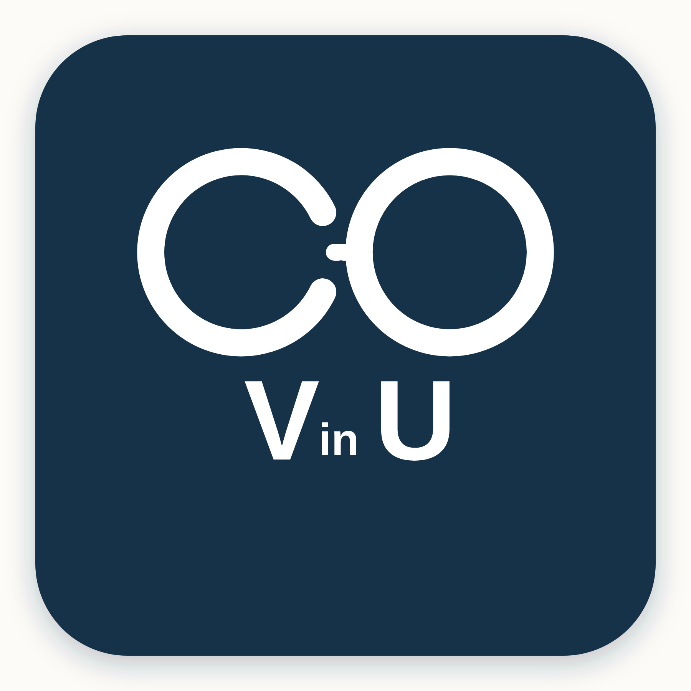
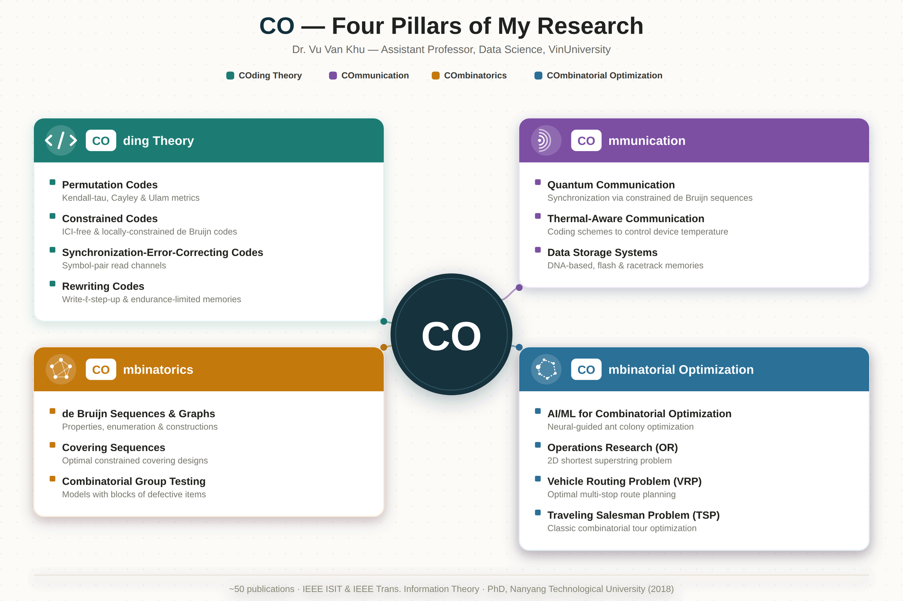

01⌘
Coding
Theory
Constructing codes that protect information, coordinate systems, and recover from error.
↗
CO · VinUResearch GroupVinUniversity · Hanoi, Vietnam
We study the structures, algorithms, and applications behind better decisions when the possibilities are too many to count.
Combinatorial optimization gives us a language for problems with many possible arrangements: routing a fleet, designing a code, or finding a sequence with exactly the right properties. Our group brings together theory, computation, and application to make those problems understandable and solvable.
Our work moves between foundational questions and useful systems. These pillars describe the shared territory of the group.
Constructing codes that protect information, coordinate systems, and recover from error.
↗Designing reliable communication and storage systems under physical and practical constraints.
↗Studying sequences, graphs, and arrangements through their properties, patterns, and constructions.
↗Finding the best feasible choice among a vast number of possible solutions.
↗
We welcome conversations with prospective students, collaborators, and people working on problems where structure can make a difference.
Email the group ↗